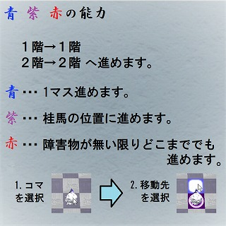
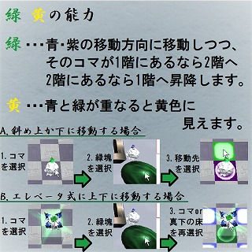
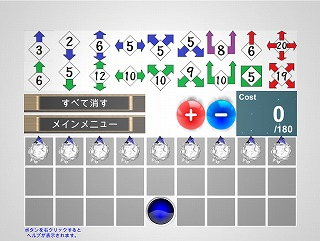

Atomize
説明
Atomizeは将棋を２階建てにしたようなゲームです。
本来ボードの上にコマが置いてあるというのが将棋やチェスをはじめとするボードゲームの常識です。ボードゲームには長い歴史がありますが、地球上に重力がある限り、それは覆すことができませんでした。Atomizeは重力を取り除いたバーチャルな空間にて行われるので、コマが3Dの動きができるようになっています。


例えば、あるコマは「右斜め前上」という方向に進むことができたりします。動画を注意深く観てみると、緑色に光っているコマがあるかと思いますが、それが2階にいるコマです。
コマが動ける方向が増えたことによって、動きのバリエーションが増え、かなり頭を使うボードゲームになっています。頭を使うことが好きな人はハマりやすく、UC Berkeley生の間でも人気が出たゲームです。
Atomizeにはもう一つ大きな特徴があります。Atomizeでは自分でコマの能力と配置を決めてチームを編成することができます。

上の方にある矢印が書かれたボタンは、コマに能力を与えるボタンです。矢印の進行方向にコマは進めるようになりますが、使いやすい動きの能力ほど、コストが高く設定されています。例えば赤い矢印の能力はそれぞれ将棋で言う飛車と角行の能力で、紫の矢印が桂馬の能力です。強い能力なのでコストは高くかかってしまいます。また、取った相手のコマは将棋同様に自分のコマとして使えるので、強い味方を取られてしまうと形成が不利になります。自陣の2列にはいくらでもコマを作れるので、少数精鋭で攻めるのか、数で攻めて自分の弱いコマと相手の強いコマを交換させて攻めるのかなど、戦術も多岐にわたります。
一つのコマに付けられる能力は3つまでになります。
AppStoreから遊べます